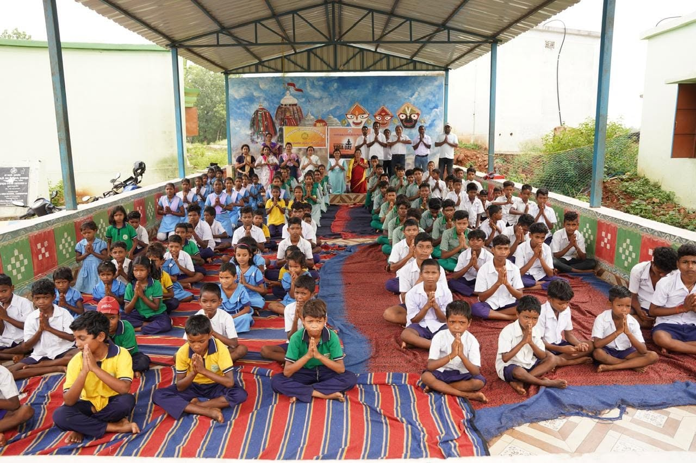
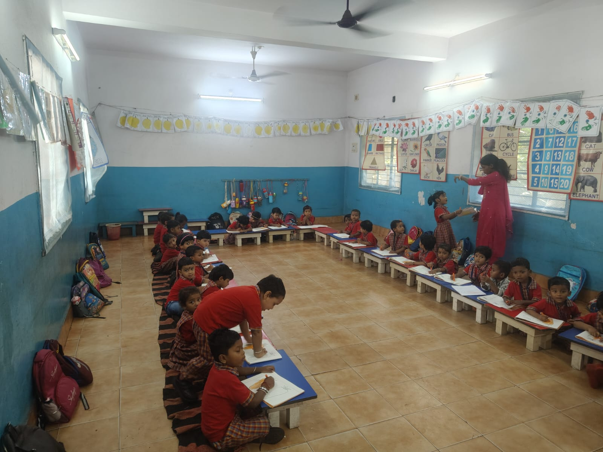

01 / Early years
Early childhood education
Free education for children in playschool, nursery, Lower Kindergarten (LKG) and Upper Kindergarten (UKG), with a focus on foundational learning.
Ask about the programmeLearning opportunities for the community
Vidya Shakti Niwas supports learning in Bilaipada through early childhood education, computer literacy, and creative activities.

About the organisation
Vidya Shakti Niwas works in Bilaipada and provides free early education for children in playschool, nursery, LKG and UKG. The organisation also runs a computer training centre and offers music and dance activities.
This website is designed to help the organisation explain its work, share verified programme information, and make it easier for community members, volunteers and potential supporters to get in touch.
School gallery
Explore classroom learning through a selection of photographs.



What we do
Explore the learning opportunities offered by Vidya Shakti Niwas.
01 / Early years
Free education for children in playschool, nursery, Lower Kindergarten (LKG) and Upper Kindergarten (UKG), with a focus on foundational learning.
Ask about the programme
02 / Digital skills
Computer training introduces learners to basic computer skills. The organisation can add current class timings and course details after confirmation.
Ask about training
03 / Creative development
Music and dance activities provide creative opportunities alongside academic and digital learning.
Learn moreOur reach
A snapshot of the learning programmes and activities at Vidya Shakti Niwas.
Across playschool, nursery, LKG and UKG.
Taking part in basic computer skills training.
Regular opportunities to build digital skills.
The future starts here
Every lesson can spark a possibility. With access to education, digital skills and creative expression, children can grow into confident learners, problem-solvers and future leaders in their communities.
“Every letter learned, every question asked and every new skill practised can open a door. With a strong start in education, today’s curious children can grow into tomorrow’s teachers, professionals and community leaders.”
“Learning to use technology is more than learning to operate a computer. It can help young people explore ideas, solve problems and prepare for further study and future careers.”
“When children feel supported, they can find the courage to try, the patience to learn with others and the confidence to lead with empathy. Small steps today can help shape a stronger community tomorrow.”
With gratitude
Every opportunity to learn is strengthened by a community that believes in education. We are grateful to everyone who supports the work of Vidya Shakti Niwas.
Recognise organisations and partners after their names and acknowledgements are approved for publication.
Celebrate people who contribute time, encouragement, or other support—with their permission.
Acknowledge approved contributions of learning materials, services, or other useful resources.
A note of gratitude
To everyone who supports the mission of Vidya Shakti Niwas, thank you for your encouragement and generosity. Together, we can continue working towards learning and opportunity.
Get involved
Interested in volunteering, supporting learning materials, helping with digital education, or exploring an institutional partnership? Contact the organisation to discuss current needs.
Contact
For programme enquiries, volunteering or potential partnerships, contact Vidya Shakti Niwas using its verified official contact details.